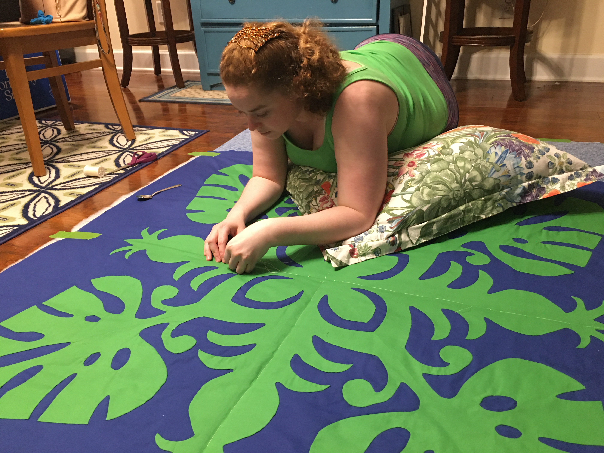

Welcome to What is Emma Doing!
Emma Lani Bufalini is a multi media artist and business women who is always finding new project or businesss to work on. Her friends had a joke that every time they asked what she was doing it would be different so this site is here to help you find out what she is currently up to! She has a variety of interests you can explore and learn about. If you are interested in a comission reach out to us via email or our contact page.
